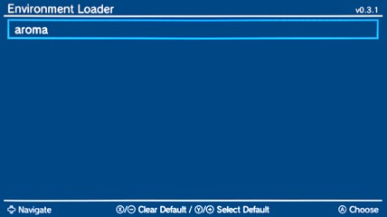
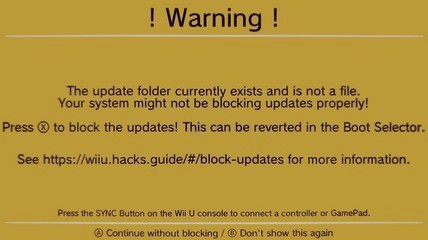
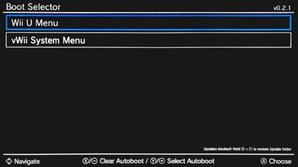

Primer arranque
Si todo ha funcionado correctamente, aparecerá el cargador de entorno (Environment Loader).
Environment Loader

Selecciona aroma, pulsa Y para marcarlo como predeterminado y luego A para cargarlo.
Bloqueo de actualizaciones
Si aparece un mensaje de advertencia acerca del update folder quiere decir que tu consola no está bloqueando las actualizaciones del sistema completamente.

Pulsa X para bloquear las actualizaciones.
Boot Selector

Selecciona Wii U Menu, pulsa Y para marcarlo como predeterminado y luego A para cargarlo.
Formateo del almacenamiento WFS
Si decidiste particionar la tarjeta SD o el dispositivo USB para *archivos homebrew* y para *juegos de Wii U*, la consola te preguntará si deseas formatear el "dispositivo USB de almacenamiento" conectado.
Solamente se formateará la partición reservada para los *juegos de Wii U*. Selecciona Sí.
Si no aparece ese mensaje, a pesar de haber particionado para *juegos de Wii U*, haz lo siguiente:
- Abre la aplicación Configuración de la consola desde el menú de Wii U.
- Ve a Gestión de datos (segunda pestaña).
- Selecciona Formatear un dispositivo USB de almacenamiento.
- Pulsa Seguir hasta que que la consola pregunte ¿Seguro que quieres formatearlo?.
- Pulsa Sí y espera a que finalice el formateo.
Instalar PayloadLoader crea un conflicto con tu configuración actual.
Si has consultado otras guías, es posible que hayas visto instrucciones para utilizar la aplicación PayloadLoader Installer. Con tu configuración actual no debes utilizar PayloadLoader Installer.
Tradicionalmente, se usaba PayloadLoader para cargar Aroma, pero actualmente estás usando un método diferente (ISFShax + Stroopwafel) para cargar Aroma por lo que instalar PayloadLoader es completamente innecesario.